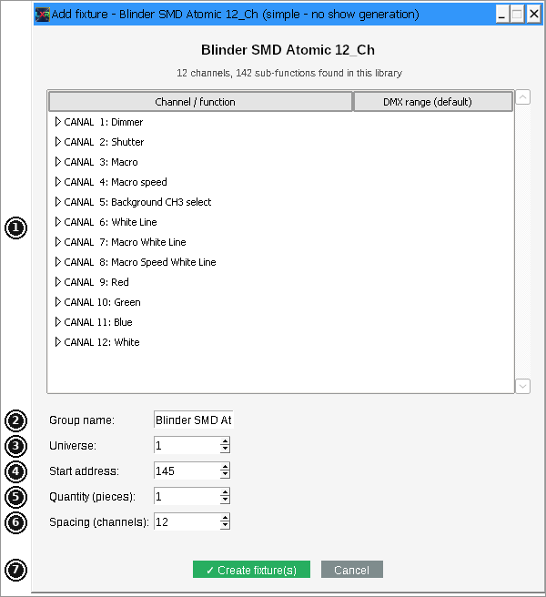
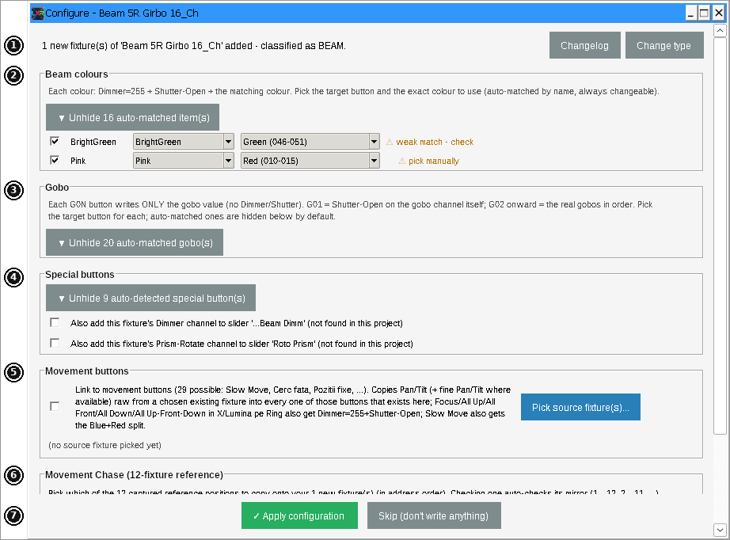
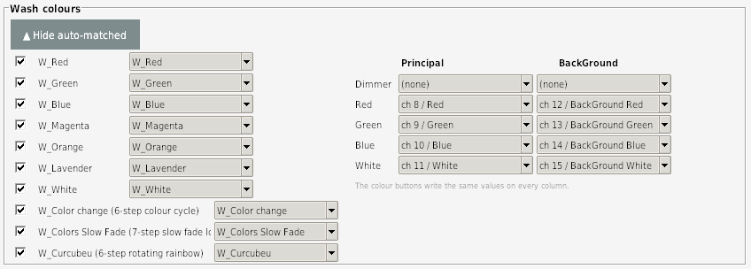

For: Full
Two buttons of +Add Fixture add fixtures to the project:
Both begin the same way: Choose a fixture library (.lfi2) asks for the profile of the fixture, then the window below says where the new fixtures go.

One more Blinder SMD Atomic for Andrei_edit.x1, at 145: the first free place of universe 1.
| 1 | The profile - its channels, each with its functions and their DMX ranges (the triangle opens them). Above: its name, and how many channels and functions it has. |
| 2 | Group name - the name of the new group; the name of the profile at first. A name the project already has gets (2), (3) ... after it. |
| 3 | Universe - the universe of the first fixture. |
| 4 | Start address - the first address of the first fixture. |
| 5 | Quantity (pieces) - how many fixtures. |
| 6 | Spacing (channels) - from the first address of one fixture to the first address of the next; at first the number of channels (one right after the other). |
| 7 | Create fixture(s) - adds them, as a new group; Cancel adds nothing. |
Universe and Start address are filled in with the first free place where all the fixtures fit, from the universe shown in the grid on; they follow Quantity and Spacing when those change. The Fade of each channel comes from the profile.
Important: the project keeps only the file name of the profile. Copy the
.lfi2 into the folder of the project, so that the program finds it the next time the project is opened
(see The program folder and its files).
With New Fixture with "show-ready" function in Live-Panel, after Create fixture(s) the program decides what kind of fixture it is - Beam, Wash, Par or Other Effect - from the name of the profile, and asks when it cannot tell. Then the Configure window shows what can be written into the buttons of the project for the new fixtures.

A Beam 5R Girbo 16_Ch added to Andrei_edit.x1 with show-ready.
| 1 | What was added and the kind found (here BEAM). Changelog: what is written into each kind of button. Change type: choose the kind yourself - or a button prefix of your own, for fixtures that should use colour buttons as Par and Wash do. |
| 2 | Beam colours (Wash colours, Par colours) - each colour button of the project, with the colour of the new fixture it will get: dimmer 255, shutter open and that colour. The colours are matched by name and can always be changed in the lists; weak match - check and pick manually mark the ones to look at. The buttons matched well are hidden; Unhide shows them. |
| 3 | Gobo - each G0N button gets only the gobo value (no dimmer, no shutter): G01 is the open position of the wheel (no gobo), G02 on are the real gobos, in order. |
| 4 | Special buttons - the strobes, Lights ON / OFF and the like found in the project; and boxes that add the Dimmer or the Prism-Rotate channel of the new fixture to the sliders of the project that control those. |
| 5 | Movement buttons - the movement buttons of the project (Slow Move, Cerc fata, Pozitii fixe and the others) get the pan and tilt of a fixture you choose with Pick source fixture(s)...: its values are copied into each of those buttons for the new fixture. |
| 6 | Movement Chase (12-fixture reference) - which of the 12 reference positions of the project go to the new fixtures, in address order. Ticking one ticks its mirror too (1 and 12, 2 and 11 ...). |
| 7 | Apply configuration writes everything ticked into the buttons; Skip (don't write anything) leaves the buttons as they are (the fixtures stay added). |
Next to the colour buttons of Wash colours (Par colours) a table shows which channels of the fixture the colour buttons write: a row for Dimmer, Red, Green, Blue, White (and Amber when the fixture has it), a column for Principal and one for every other colour section found in the names of the channels - BackGround Red / Green / Blue / White is the section BackGround, Red 2 / Green 2 ... is Section 2, Ring R / Ring G / Ring B is Ring.

Beam Dual-Sided RGBW 17_Ch added as a Wash: its front (ch 8-11) and its BackGround (ch 12-15).
After Apply configuration the log lists what was written; what could not be written (a colour or a value the new fixture does not have) is listed in a message. A project with no Live panel buttons has nothing to configure: the fixtures are only added.
Tip: one Undo takes back the new fixtures together with what the configuration wrote.